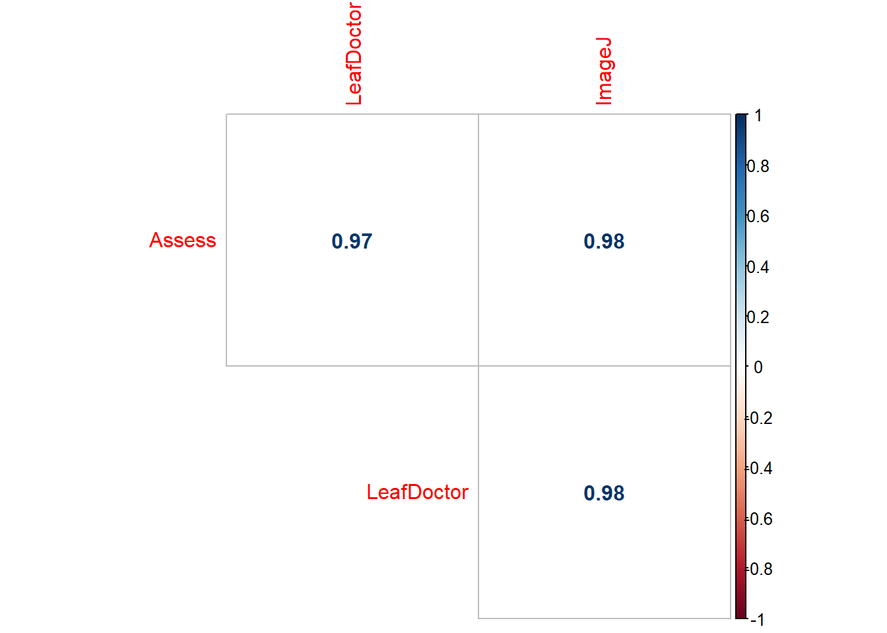
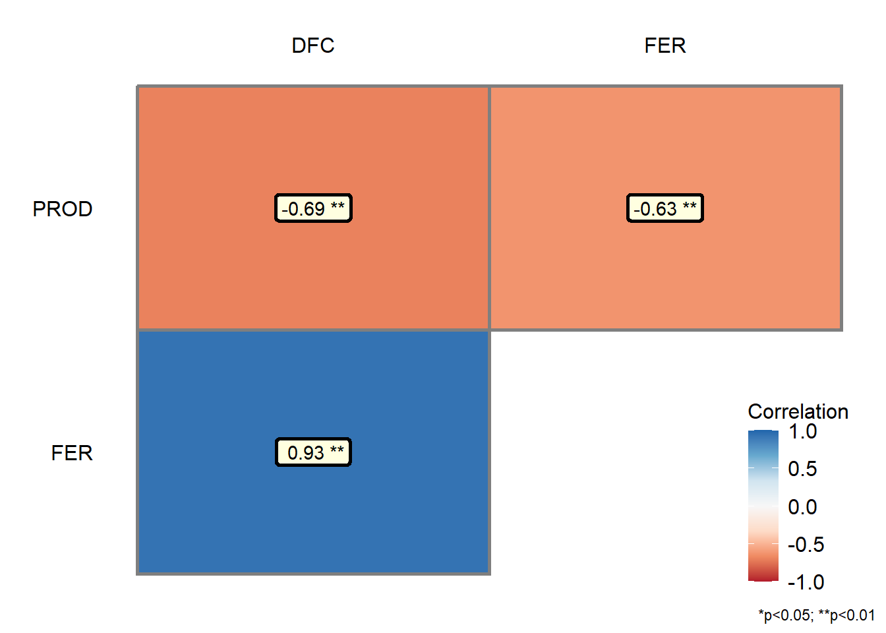
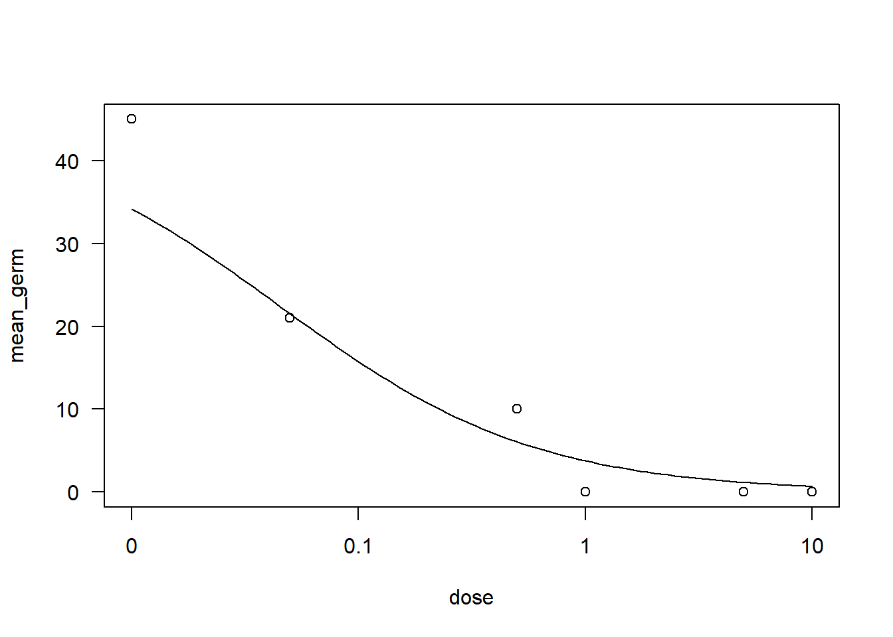
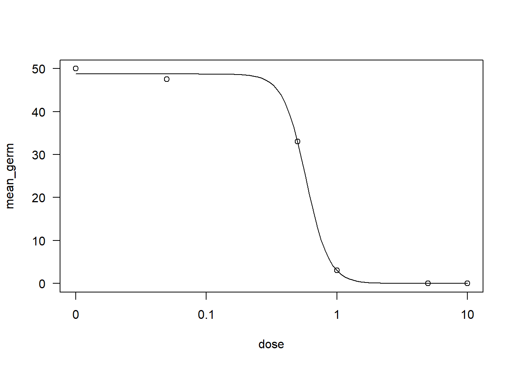
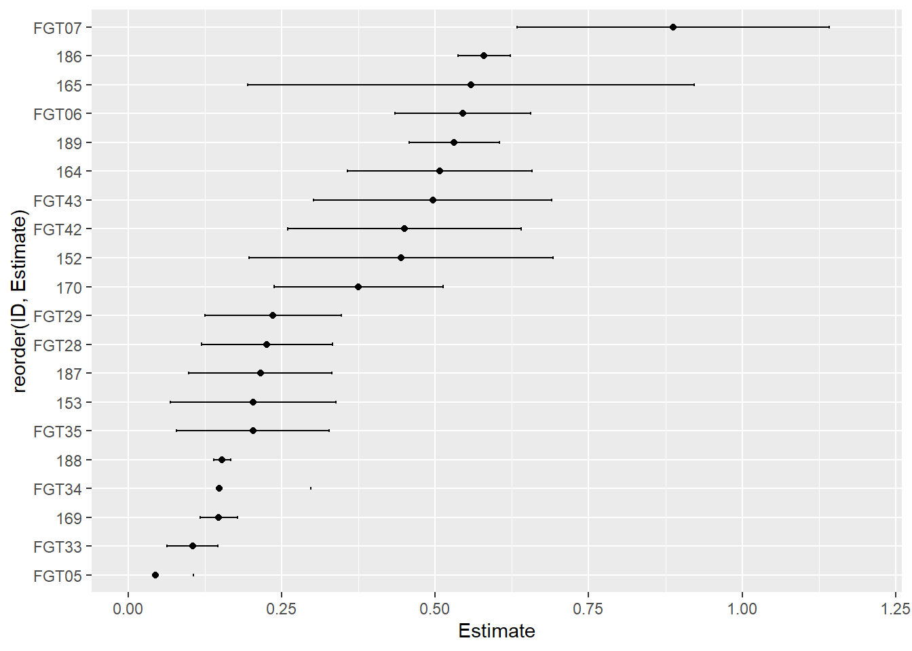

library(gsheet)
library(tidyverse)
library(patchwork)
library(AgroR)Aula 10
Aula 10
Análise de correlação
corr <- gsheet2tbl("https://docs.google.com/spreadsheets/d/1bq2N19DcZdtax2fQW9OHSGMR0X2__Z9T/edit#gid=373270992")Análise exploratória - Visualização gráfica
Gráfico de Correlação
Considerando o software “Assess” como o padrão, serão feitos gráficos de correlação entre ele e os outros softwares, “LeafDoctor” e “ImageJ”. O objetivo é verificar se os métodos possuem alguma correlação com o “Assess” e se essa correlação é positiva ou negativa.
g1 <- corr %>%
ggplot(aes(Assess, LeafDoctor))+
geom_point()+
geom_smooth(method = "lm")
g1
g2 <- corr %>%
ggplot(aes(Assess, ImageJ))+
geom_point()+
geom_smooth(method = "lm")
g2
Os gráficos acima demonstram que os softwares avaliados possuem correlação positiva com o software “Assess”.
Boxplot
Será construído um boxplot para verificar a variabilidade dos dados em função do método (software).
g3 <- corr %>%
pivot_longer(3:5, names_to = "method",
values_to = "value") %>%
ggplot(aes(method , value))+
geom_boxplot()
g3
Com o pacote patchwork será feito um plot contendo os três gráficos gerados anteriormente:
g3 + (g1/g2)Coeficiente de correlação (r)
O coeficiente de correlação (ou correlação de Pearson) varia entre -1 e +1. Se o valor for negativo, há correlação negativa; caso seja positivo, a correlação será positiva. Além disso, quanto mais próximo às extremidades (-1 ou +1), mais forte será a correlação.
Uma opção para obter os coeficientes de correlação (r) é adotar a função cor.test (nativa do R):
cor.test(corr$Assess, corr$LeafDoctor)
Pearson's product-moment correlation
data: corr$Assess and corr$LeafDoctor
t = 31.119, df = 68, p-value < 2.2e-16
alternative hypothesis: true correlation is not equal to 0
95 percent confidence interval:
0.9466882 0.9792005
sample estimates:
cor
0.9666367 cor.test(corr$Assess, corr$ImageJ)
Pearson's product-moment correlation
data: corr$Assess and corr$ImageJ
t = 38.383, df = 68, p-value < 2.2e-16
alternative hypothesis: true correlation is not equal to 0
95 percent confidence interval:
0.9642331 0.9861219
sample estimates:
cor
0.9776918 Pelo coeficientes obtidos, é possível dizer que os softwares possuem correlação positiva e forte, pois os valores
Gráficos para apresentar os coeficientes de correlações entre os métodos
Com AgroR:
Antes é preciso criar um objeto com os coeficientes de correlação.
corr %>%
select(3:5) %>%
corgraph() Var1 Var2 cor p
2 LeafDoctor Assess 0.9666367 5.972544e-42
3 ImageJ Assess 0.9776918 8.143613e-48
6 ImageJ LeafDoctor 0.9797478 3.144091e-49
#ou#
corr2 <- corr %>%
select(3:5)
corgraph(corr2) Var1 Var2 cor p
2 LeafDoctor Assess 0.9666367 5.972544e-42
3 ImageJ Assess 0.9776918 8.143613e-48
6 ImageJ LeafDoctor 0.9797478 3.144091e-49
Com corrplot:
library(corrplot)
corr2_1 <- cor(corr2)
corrplot(corr2_1, method = "square", type = "upper")Alterando alguns parâmetros na função (conferir o help, pois há outras variações possíveis):
- O argumento
diag = FALSEremove a comparação dentro de um mesmo método, por exemplo, Assess com Assess.
corrplot(corr2_1, method = "number", type = "upper", diag = FALSE)
Exemplo 02
Um outro exemplo de correlação, com o conjunto de dados de aulas passadas.
campo <- gsheet2tbl("https://docs.google.com/spreadsheets/d/1bq2N19DcZdtax2fQW9OHSGMR0X2__Z9T/edit#gid=866852711")
campo2 <- campo |>
dplyr::select(DFC, FER, PROD)Com corgraph
corgraph(campo2) Var1 Var2 cor p
2 FER DFC 0.9316978 9.864101e-15
3 PROD DFC -0.6928161 1.110652e-05
6 PROD FER -0.6258321 1.277444e-04
Com corrplot
campo2_1 <- cor(campo2)
campo2_1 %>% corrplot(method = "number", type = "lower", diag = FALSE)
Comparação de correlações
cor.test(campo2$PROD, campo2$DFC)
Pearson's product-moment correlation
data: campo2$PROD and campo2$DFC
t = -5.2623, df = 30, p-value = 1.111e-05
alternative hypothesis: true correlation is not equal to 0
95 percent confidence interval:
-0.8388581 -0.4537361
sample estimates:
cor
-0.6928161 cor.test(campo2$PROD, campo2$FER)
Pearson's product-moment correlation
data: campo2$PROD and campo2$FER
t = -4.3949, df = 30, p-value = 0.0001277
alternative hypothesis: true correlation is not equal to 0
95 percent confidence interval:
-0.7999565 -0.3544981
sample estimates:
cor
-0.6258321 Avalia-se os intervalos de confiança obtidos (IC da correlação entre PROD e DFC vs. IC da correlação entre PROD e FER) e caso não haja sobreposição de intervalos, as correlações diferem estatisticamente.
____
Regressão linear de segunda ordem (quadrática)
estande <- gsheet2tbl("https://docs.google.com/spreadsheets/d/1bq2N19DcZdtax2fQW9OHSGMR0X2__Z9T/edit#gid=401662555")Na aula anterior, foi visto que o ensaio 2 não apresentava uma tendência linear.
Esse ensaio será utilizado para exemplificar uma regressão linear de segunda ordem.
exp2 <- estande %>%
filter(exp == 2)exp2 %>%
ggplot(aes(trat, nplants))+
geom_point()+
ylim(0,100)+
geom_smooth(method = "lm",
se = F,
color = "green",
formula = y ~ poly(x,2))+
geom_smooth(method = "lm",
se = F,
color = "red")Em vermelho, a linha que indica o modelo linear de primeira ordem. Em verde, o modelo linear de segunda ordem.
Modelo linear
lm2 <- lm(nplants ~ trat,
data = exp2)
summary(lm2)
Call:
lm(formula = nplants ~ trat, data = exp2)
Residuals:
Min 1Q Median 3Q Max
-25.7816 -7.7150 0.5653 8.1929 19.2184
Coefficients:
Estimate Std. Error t value Pr(>|t|)
(Intercept) 60.9857 3.6304 16.798 4.93e-14 ***
trat -0.7007 0.1605 -4.365 0.000247 ***
---
Signif. codes: 0 '***' 0.001 '**' 0.01 '*' 0.05 '.' 0.1 ' ' 1
Residual standard error: 12.95 on 22 degrees of freedom
Multiple R-squared: 0.4641, Adjusted R-squared: 0.4398
F-statistic: 19.05 on 1 and 22 DF, p-value: 0.0002473Como o resultado demonstra, para o modelo linear, o coeficiente de determinação é baixo (R2 = 0.43) , logo boa parte da variação dos dados não são explicados por esse modelo.
Modelo quadrático
Para construir o modelo quadrático é preciso acrescentar uma coluna ao conjunto de dados, onde a varíavel independente (nesse caso, trat) será elevada ao quadrado. Isso é necessário para obtermos um segundo coeficiente no momento de criar o modelo.
exp2$trat2 <- exp2$trat^2lm2_quad <- lm(nplants ~ trat + trat2,
data = exp2)
summary(lm2_quad)
Call:
lm(formula = nplants ~ trat + trat2, data = exp2)
Residuals:
Min 1Q Median 3Q Max
-25.439 -6.019 1.789 8.016 19.561
Coefficients:
Estimate Std. Error t value Pr(>|t|)
(Intercept) 66.30156 4.42097 14.997 1.08e-12 ***
trat -1.77720 0.58467 -3.040 0.00623 **
trat2 0.02223 0.01166 1.906 0.07036 .
---
Signif. codes: 0 '***' 0.001 '**' 0.01 '*' 0.05 '.' 0.1 ' ' 1
Residual standard error: 12.24 on 21 degrees of freedom
Multiple R-squared: 0.5432, Adjusted R-squared: 0.4997
F-statistic: 12.49 on 2 and 21 DF, p-value: 0.0002675Com a função polynomial (AgroR):
with(exp2, polynomial(trat, nplants, grau = 2))
----------------------------------------------------
Regression Models
----------------------------------------------------
Estimate Std. Error t value Pr(>|t|)
(Intercept) 66.30156250 4.42096799 14.997069 1.079972e-12
trat -1.77719814 0.58467380 -3.039640 6.230050e-03
I(trat^2) 0.02222876 0.01165948 1.906496 7.036247e-02
----------------------------------------------------
Deviations from regression
----------------------------------------------------
Df SSq MSQ F p-value
Linear 1 3196.2031 3196.2031 21.823293 0.0001899378
Quadratic 1 544.5029 544.5029 3.717801 0.0697619482
Deviation 3 509.6690 169.8897 1.159986 0.3523240106
Residual 18 2636.2500 146.4583 [[1]]
Comparando os AICs
AIC(lm2)[1] 194.9597AIC(lm2_quad)[1] 193.1284Pelo teste de AIC, em comparação ao modelo linear, o modelo quadrático explica melhor a variação dos dados, pois AIC(lm2_quad) < AIC(lm2).
Modelo de terceira ordem - teste
with(exp2, polynomial(trat, nplants, grau = 3))
----------------------------------------------------
Regression Models
----------------------------------------------------
Estimate Std. Error t value Pr(>|t|)
(Intercept) 70.265143802 5.300440019 13.256474 2.295186e-11
trat -3.609380523 1.514625525 -2.383018 2.720299e-02
I(trat^2) 0.140522077 0.091192577 1.540938 1.390058e-01
I(trat^3) -0.001712445 0.001309648 -1.307561 2.058546e-01
----------------------------------------------------
Deviations from regression
----------------------------------------------------
Df SSq MSQ F p-value
Linear 1 3196.2031 3196.2031 21.8232929 0.0001899378
Quadratic 1 544.5029 544.5029 3.7178008 0.0697619482
Cubic 1 247.7520 247.7520 1.6916208 0.2097934169
Deviation 2 261.9170 130.9585 0.8941691 0.4263523326
Residual 18 2636.2500 146.4583 [[1]]
Apesar do polinômio de grau 3 explicar melhor os dados, o modelo não possui explicação biológica plausível (do estande de plantas aumentar em função do aumento do inóculo para depois decrescer).
Modelo não–linear
Aplicação na fitopatologia, em curvas de EC50.
fung <- gsheet2tbl("https://docs.google.com/spreadsheets/d/1bq2N19DcZdtax2fQW9OHSGMR0X2__Z9T/edit#gid=465348652")Cálculo da média de germinação em função do isolado.
fung2 <- fung %>%
group_by(code, dose) %>%
summarise(mean_germ = mean(germination))
Visualização da média de germinação com gráfico de pontos
fung2 %>%
ggplot(aes(dose, mean_germ))+
geom_point()+
facet_wrap(~ code)Modelagem da EC50 (modelo não-linear)
Para modelar a EC50 será utilizado o pacote drc, com a função drm.
Antes, é preciso criar um novo objeto somente com os dados do isolado selecionado (ex.: FGT05). Em seguida, definimos na função drm que a germinação média será modela em função da dose, qual o conjunto de dados (data = FGT05) e qual a função utilizada (no caso, fct = LL.3()).
library(drc)
FGT05 <- fung2 %>%
filter(code =="FGT05")
drc_fgt05 <- drm(mean_germ ~ dose,
data = FGT05,
fct = LL.3())
summary(drc_fgt05)
Model fitted: Log-logistic (ED50 as parameter) with lower limit at 0 (3 parms)
Parameter estimates:
Estimate Std. Error t-value p-value
b:(Intercept) 0.769933 0.198566 3.8775 0.0303750 *
d:(Intercept) 44.924753 3.261699 13.7734 0.0008283 ***
e:(Intercept) 0.044839 0.019291 2.3243 0.1026764
---
Signif. codes: 0 '***' 0.001 '**' 0.01 '*' 0.05 '.' 0.1 ' ' 1
Residual standard error:
3.253867 (3 degrees of freedom)AIC(drc_fgt05)[1] 35.02651plot(drc_fgt05)
É importante definir a função para comparar os modelos e selecionar aquele mais simples (com menor AIC).
Cálculo de EC50
Será utilizada a função ED pacote (drc).
Seleciona-se o objeto, o valor da varíavel resposta (50), e o tipo de intervalo de confiança que será apresentado.
ED(drc_fgt05, 50, interval = "delta")
Estimated effective doses
Estimate Std. Error Lower Upper
e:1:50 0.044839 0.019291 -0.016554 0.106231No caso, a dose que inibe 50% da germinação de conídios foi estimada em 0.04, com -0.01 < IC < 0.10.
Outros exemplos
I_165 <- fung2 %>%
filter(code =="165")
drc_165 <- drm(mean_germ ~ dose,
data = I_165,
fct = LL.3())
summary(drc_165)
Model fitted: Log-logistic (ED50 as parameter) with lower limit at 0 (3 parms)
Parameter estimates:
Estimate Std. Error t-value p-value
b:(Intercept) 1.21560 0.26679 4.5564 0.0198145 *
d:(Intercept) 36.14322 1.97554 18.2954 0.0003563 ***
e:(Intercept) 0.55840 0.11420 4.8898 0.0163598 *
---
Signif. codes: 0 '***' 0.001 '**' 0.01 '*' 0.05 '.' 0.1 ' ' 1
Residual standard error:
2.436519 (3 degrees of freedom)AIC(drc_165)[1] 31.55522plot(drc_165)ED(drc_165,50, interval = "delta")
Estimated effective doses
Estimate Std. Error Lower Upper
e:1:50 0.55840 0.11420 0.19498 0.92182I_186 <- fung2 %>%
filter(code =="186")
drc_186 <- drm(mean_germ ~ dose,
data = I_186,
fct = LL.3())
summary(drc_186)
Model fitted: Log-logistic (ED50 as parameter) with lower limit at 0 (3 parms)
Parameter estimates:
Estimate Std. Error t-value p-value
b:(Intercept) 4.997636 0.542650 9.2097 0.002708 **
d:(Intercept) 48.750109 0.721642 67.5545 7.148e-06 ***
e:(Intercept) 0.579757 0.013332 43.4853 2.677e-05 ***
---
Signif. codes: 0 '***' 0.001 '**' 0.01 '*' 0.05 '.' 0.1 ' ' 1
Residual standard error:
1.020525 (3 degrees of freedom)AIC(drc_186)[1] 21.11219plot(drc_186)
ED(drc_186, 50, interval = "delta")
Estimated effective doses
Estimate Std. Error Lower Upper
e:1:50 0.579757 0.013332 0.537328 0.622187Calculando os EC50 de uma só vez
Pelo método anterior, é preciso modelar o EC50 individualmente, o que pode ser trabalhoso, dependendo do número de amostras. Assim, o pacote ec50estimator é útil nessa situações, pois permite modelar, calcular a EC50 e o IC de todos os tratamento de uma só vez.
library(ec50estimator)
df_ec50 <- estimate_EC50(mean_germ~dose,
data = fung2,
isolate_col = "code",
interval = "delta",
fct = drc::LL.3())
view(df_ec50)
library(DT)
datatable(df_ec50)Problema, não é possível selecionar a função de cada modelo para melhor se adequar a cada tratamento.
Gráfico com as doses de EC50 e intervalo de confiança:
df_ec50 %>%
ggplot(aes(reorder(ID, Estimate), Estimate))+
geom_point()+
geom_errorbar(aes(ymin = Lower,
ymax = Upper),
width = 0.1)+
ylim (0, 1.2)+
coord_flip()
Argumento reorder(ID, Estimate), Estimate , utilizado para ordenar os tratamentos em função da resposta (ordem crescente).